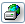

| Term/Icon |
Name/Alternate Text |
Action It Performs |
 | Folder Menu | Displays the current folder and the number of unread/read messages. Also allows you to change the current folder. |
 | New Message | Allows you to write a new e-mail. |
 | Folders | Allows you to view, edit, delete, and create folders. |
 | Mail Filters | Allows you to filter incoming e-mail. |
 | POP3 | Receives any e-mail that may have been sent to you during your session. |
 | Advanced Search | Performs a detailed search for a message. |
 | Refresh | Reloads the current page. |
 |
Address Book |
Opens the address book for editing. |
 | Calendar | Opens the Calendar, allowing you to make detailed daily notes. |

|
Webdisk
|
Stores your files and mail attachments.
|

|
Terminal
|
Opens a secure terminal session to your host system.
|
 | User Preferences | Allows you to alter and personalize your settings. |
 | Logout | Exits Open Webmail. |

|
Spam (not shown)
|
Train the system to learn received message(s) are Spam.
|
 | Move to Trash | Moves the selected message(s) to the trash. |